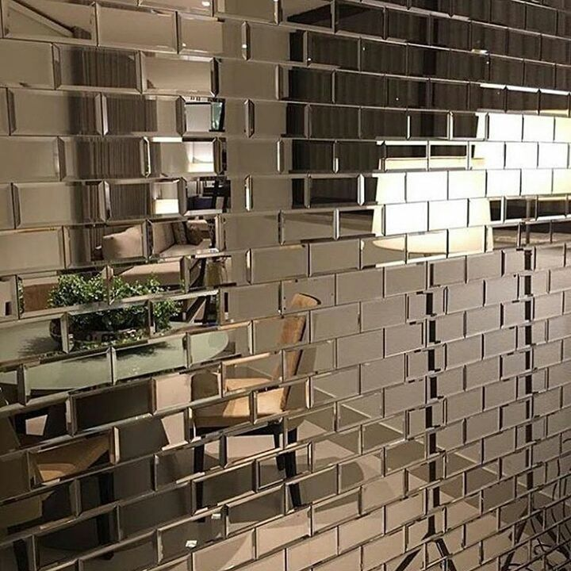
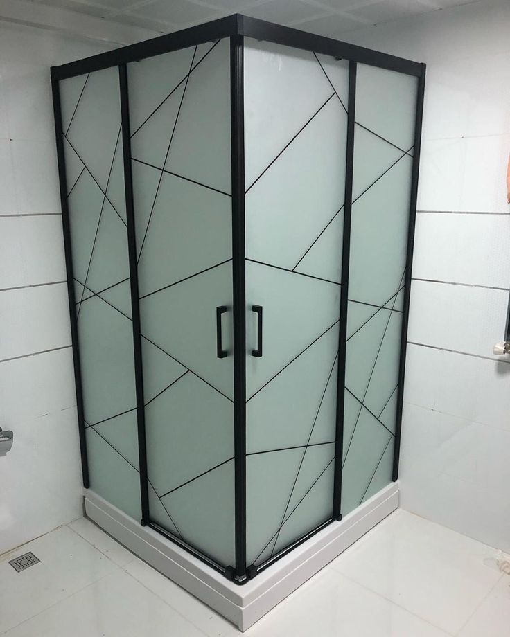

أقسام بدون إطار
أنظمة تقسيم المكاتب والداخلية النظيفة التي تحافظ على المساحات مشرقة ومفتوحة ومعاصرة.
الزجاج المعماري المتميز في الأردن
بدءًا من أقسام المكاتب بدون إطار وحتى الواجهات الرائعة والدرابزين الأنيق، تقوم شركة Glassology بتصميم وتصنيع وتركيب حلول زجاجية تحقق التوازن بين الرؤية والسلامة والتشطيب المصقول.


تم تصميم هذه الصفحة لتحويل نية البحث المتعلقة بالزجاج إلى استفسارات موثوقة. فهو يجمع بين وضوح الخدمة والإثبات البصري والنطاق العملي ونسخة بناء الثقة للعملاء الذين يقومون بتقييم الأقسام والواجهات والمداخل ومباني الاستحمام وأنظمة الدرابزين.
تمت كتابة كل كتلة أدناه لدعم أهمية تحسين محركات البحث وتسهيل عملية اتخاذ القرار للمشتري.
أنظمة تقسيم المكاتب والداخلية النظيفة التي تحافظ على المساحات مشرقة ومفتوحة ومعاصرة.
حلول زجاجية خارجية متميزة لواجهات المحلات التجارية والمكاتب والواجهات التجارية عالية الوضوح.
أنظمة دش سكنية مُجهزة خصيصًا بتفاصيل بسيطة وأجزاء صلبة متينة.
أنظمة درابزين تركز على السلامة وتحافظ على المناظر وترفع من مستوى الهندسة المعمارية الحديثة.
لوحات بيانية، وعلاجات للخصوصية، وتطبيقات مخصصة للتصميمات الداخلية الراقية.
توصيات مادية بناءً على احتياجات السلامة والخصوصية والهيكلية والاستخدام.
بالنسبة للعملاء والمهندسين المعماريين والمقاولين، فإن قيمة الصفحة الزجاجية لا تتمثل في الإلهام فحسب، بل في الوضوح أيضًا. تحتاج الصفحة إلى أن تعرض بسرعة المكان الذي يعمل فيه الزجاج بشكل أفضل، ومستوى التشطيب المتوقع، وكيفية الانتقال من الفكرة إلى التثبيت مع احتكاك أقل.
أرسلها مباشرة واحصل على توجيه أسرع بشأن خيارات النظام، وإنهاء التوصيات، والخطوات التالية.
تبدأ العديد من مشاريع الزجاج بطموح بسيط: فتح المساحة بصريًا دون فقدان البنية أو السلامة أو جودة التشطيب. ما يحتاجه العملاء عادةً هو الحل الذي يبدو بسيطًا ومشرقًا ومتميزًا بمجرد تثبيته.

يُطمئن إطار العملية هذا العملاء إلى أن اختيار المواد والتفصيل والقياسات والتركيب يتم التعامل معها من خلال الانضباط الذي تتطلبه أعمال الزجاج المتميزة.
نقوم بتقييم الأبعاد والاستخدام والخصوصية والأجهزة والأهداف المرئية قبل التوصية بالنظام.
تساعد المراجعة في الموقع على مواءمة أحجام الفتح وظروف الجدار والتفاوتات وتسلسل التثبيت.
يتم إعداد نوع الزجاج وتشطيب الحواف والأجهزة والتفاصيل الداعمة للتنفيذ النظيف.
يقوم فريقنا بالتثبيت مع التركيز على المحاذاة والاستقرار والعرض النهائي المتميز.
يعمل الارتباط المتقاطع على تقوية التنقل وتحسين بنية تحسين محركات البحث (SEO) وتسهيل اكتشاف الخدمات التكميلية للزائرين.
تدعم مجموعة الأسئلة الشائعة هذه رؤية البحث الطويل وتزيل الاحتكاك قبل الاتصال.
نعم. تقوم شركة Glassology بتصميم وتركيب أنظمة تقسيم بدون إطار للمكاتب وقاعات الاجتماعات ومشاريع تقسيم المناطق الداخلية في الأردن.
نعم. يتم تقديم التوصيات المادية بناءً على متطلبات السلامة والتطبيق والرؤية والخصوصية والمتطلبات الخاصة بالمشروع.
نعم. يشمل النطاق السكني حاويات الدش، والسور، والمداخل، وغيرها من التركيبات الزجاجية الداخلية أو الخارجية المخصصة.
إرسال الأبعاد والصور والرسومات والموقع والاستخدام المقصود للنظام. وهذا يساعدنا على التوصية بالزجاج المناسب والأجهزة بشكل أسرع.
تم إنشاء قسم الإغلاق هذا عمدًا ليكون بمثابة نقطة ارتكاز التحويل لكل صفحة خدمة. فهو يجمع بين الهاتف وWhatsApp ونموذج استفسار خفيف الوزن خاص بالصفحة.
شكرًا لك. سيقوم فريق علم الزجاج بمراجعة استفسارك حول حلول الزجاج والرد عليها في أسرع وقت ممكن.